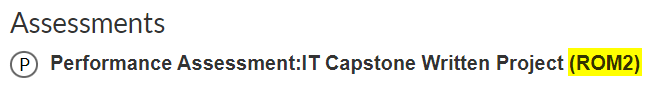
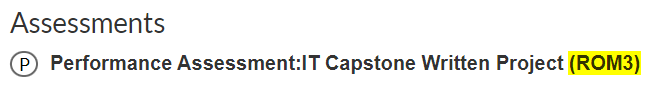

Warning
You are on the wrong page. Everyone should go to the new ROM3 website: C769 website
The ROM2 version has been retired, and this site is no longer maintained.
Welcome to C769!#
Which version of C769 are you enrolled in?#
Go to the Assessments section of your COS page and review the top line:
C769 ROM2

All resources here align with ROM2: Videos, Templates, Examples,FAQs, etc.
C769 ROM3

The CI capstone team is developing resources for ROM3!
Warning
For ROM3, the official COS learning resource (GO TO COURSE MATERIAL) has yet to be aligned with the new ROM3 rubric (as of 9/7/2024). While mostly revlevant, be aware that there are discrepancies between the two.
C769 feedback#
The C769 course faculty cannot make changes to most WGU offical resources. This includes the COS page, leanrning resource, or rubrics. For feedback or suggestions on these items, please go to your C769 COS page and click Course Feedback.

This creates a ticket for our product development team.
The C769 course faculty can make changes to these websites, and we greatly appreciate your support in imprving these resources. For feedback or suggestions leave a comment below and/or our ⭐ repo (you’ll need a GitHub account) OR email our team 📧 Email people who value your input